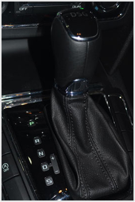
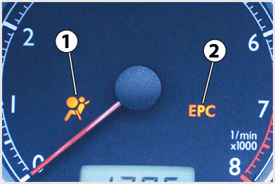
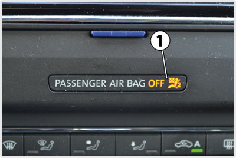
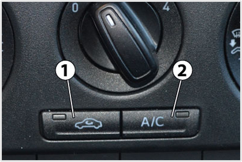

- 2036. Szabad-e a jármű motorját zárt helyiségben hosszabb ideig működtetni? #703240
- Nem, mert a kipufogógázban lévő szén-monoxid belélegezve rosszullétet, súlyos esetben halált okozhat.
- Igen, mert a kipufogógázban nincsenek mérgező, káros anyagok.
- Igen, de csak akkor, ha a hanghatás mások számára nem zavaró.
- Igen, ha a motor ez idő alatt csak alapjáraton működik.
- Igen, de csak akkor, ha a járművezető előzetesen üresbe kapcsolta a jármű sebességváltóját.
- 2037. Lemerült akkumulátor esetén szabad-e a katalizátoros gépjármű motorját behúzatással (betolással) beindítani? #703241
- Nem, mert a katalizátor károsodhat, tönkremehet.
- Igen, mert ez a katalizátor élettartamát nem befolyásolja.
- Igen, mert másképp nem lehet ezt a járművet beindítani.
- Igen, ha előzetesen a katalizátor kapcsolóját kikapcsolták.
- Igen, de csak akkor, ha a behúzatást a nyomó- és húzóerók felvételére alkalmas vontatórúddal végzik.
- 2038. Ha a motor üzemi hőmérséklete nem éri el a 80 Celsius fokot, ... #703288
- akkor a motor teljesítménye csökken, fogyasztása nő, kenése romlik.
- akkor a hűtőrendszer kiegyenlítő tartálya kiürült, után kell tölteni.
- akkor tovább közlekedni nem szabad, azonnal szakszervízhez kell fordulni.
- 2039. Mi a teendő, ha a műszerfalon kigyullad a hűtőfolyadék túlmelegedésére figyelmeztető ellenőrző lámpa? #703289
- A járművel célszerű megállni, és néhány percig alapjáraton járatva lehetséges a hűtőfolyadékot az üzemi hőmérsékletre visszahűteni.
- Nagyobb sebességgel kell haladni, így a menetszél a hűtőn átáramolva visszahűti az üzemi hőmérsékletre a hűtőfolyadékot.
- A járművel azonnal meg kell állni, és haladéktalanul hideg hűtőfolyadékot kell a kiegyenlítő tartályba önteni.

- 2040. A zárt rendszerű hűtőrendszer kiegyenlítő tartályában a folyadék szintjének... #703290
- a minimum és a maximum jelzések között kell lennie.
- a tartály közepénél kell lennie.
- a tartály tetejénél kell lennie.
- 2041. Miért szükséges a jármű motorjának hűtése? #703339
- A jármű motorjának ideális, üzemi hőmérsékleten tartása miatt.
- Mert nagy hőmérsékleten az üzemanyag kémiailag átalakul, és ez akadályozza a megfelelő égést.
- A motor hirtelen hőterhelésének megakadályozására.
- 2042. Milyen hátrányai vannak a hideg (nem üzemmeleg) motorral való közlekedésnek? #703340
- A motor teljesítménye csökken, kenése romlik, üzemanyag fogyasztása nő.
- Ha az utastér fűtése nem szükséges, akkor nincs hátránya a hideg (nem üzemmeleg) motorral való közlekedésnek.
- A jármű motorja rángat, az utazás kényelmetlen.
- 2043. Kell-e ellenőrizni a hűtőfolyadék mennyiségét a zárt rendszerű hűtő kiegyenlítő tartályában? #703341
- Igen, legalább havonta egyszer. A folyadékszintnek a min. és max. jelzések között kell lennie.
- Igen, minden elindulás előtt ellenőrizni kell.
- Nem szükséges, a zárt rendszerű hűtő esetén a folyadékszint nem változik.
- 2044. Milyen állítási lehetőségei vannak általában a vezetőülésnek? #716983
- Ülőlap hosszirányú és magasságállítás, háttámla döntés, fejtámla magasságállítás és döntés.
- Ülőlap hossz- és keresztirányú állítás, háttámla döntés, fejtámla magasságállítás.
- A vezetőülés beállítását az átlagos járművezető testméreteihez optimalizálják, ezt a beállítást megváltoztatni nem lehet.
- Ülőlap magasságállítás és háttámla deréktámasz állítási lehetőség.
- 2045. Mi a sebességváltó feladata? #716988
- A motor és a hajtott kerekek fordulatszám tartományainak összehangolása, a menetellenállásoknak megfelelő hajtónyomaték beállítása, illetve hátramenet biztosítása.
- A hajtónyomaték elosztása a jármű hajtott kerekei között, valamint a kétoldali hajtott kerekek fordulatszám különbségének lehetővé tétele kanyarban haladva.
- Nehéz terepen a jármű összkerékhajtásának biztosítása.
- A hajtott kerekek kipörgésének megakadályozása csúszós úton.
- 2046. Lehet-e a megfelelő állapotú tengelykapcsoló működtetésének holtjátéka? #716990
- Igen, ez a tengelykapcsoló működtetés konstrukciójának természetes velejárója.
- Nem, ez minden esetben a tengelykapcsoló tárcsa túlzott kopására utal.
- Nem, mert a működtető rendszer minden holtjátékot automatikusan utánállít, így a pedál érintésekor a tengelykapcsoló azonnal kiemel.
- Nem, mert ez a tengelykapcsoló pedál fellazulására utal, ami nagyon veszélyes.
- 2047. Mi a tengelykapcsoló feladata? #716993
- Oldható kapcsolatot biztosít a motor és a sebességváltó között.
- Nem oldható kapcsolatot biztosít a motor és a sebességváltó között.
- Segítségével a motor egyes hengerei leválaszthatóvá válnak a többiről.
- Csúsztatásával a jármű haladási sebessége széles tartományban változtatható.
- 2048. Járművezetőként felnyithatja-e gépkocsija motorháztetejét? #717008
- Igen, a jármű kezelési utasításában leírtak figyelembevételével.
- Igen, de csak a márkaszerviz írásos engedélyével.
- Nem, ezt csak a szakszerviz munkatársai tehetik meg.
- Igen, de a motortérben semmilyen műveletet nem végezhet.
- 2049. Milyen célt szolgálnak a személygépkocsiba épített légzsákok? #717009
- Baleset (ütközés) esetén automatikusan aktiválódnak (felfúvódnak), így megvédhetik a bent ülőket a súlyosabb sérülésektől.
- A légzsákokat az ülésekbe építik, hogy azok hosszabb utazás esetén is kényelmesek legyenek.
- Az utastér friss levegővel való ellátását biztosítják, amikor a külső levegő szennyezett (pl. alagútban).
- Veszélyhelyzet esetén gombnyomásra felfúvódnak, így megvédhetik a bent ülőket a súlyosabb sérülésektől.

- 2050. Mire figyelmeztet a képen látható piros színű lámpa? #717011
- A motor kenési rendszerében nem megfelelő az olajnyomás.
- Kevés az üzemanyag mennyisége.
- Az úton olajszennyeződés van, ezért megcsúszhatnak a kerekek.
- Alacsony a motorolaj szintje.
- 2051. Mit jelent, ha a képen látható visszajelző lámpa világít? #717012
- A rögzítőfék behúzott állapotára figyelmeztet.
- Elkoptak a jármű fékbetétei.
- Túl alacsony valamelyik gumiabroncs levegőnyomása.
- Meghibásodott az üzemi fék.

- 2052. Mire utalhat, ha a képen látható piros visszajelző lámpa folyamatosan világít, vagy villog? #717013
- A hűtőfolyadék túl magas hőmérsékletére és/vagy túl alacsony szintjére.
- A hűtőfolyadék túl alacsony hőmérsékletére és/vagy túl magas szintjére.
- A motorolaj túl alacsony hőmérsékletére és/vagy túl magas szintjére.
- A fékfolyadék túl magas hőmérsékletére és/vagy túl alacsony szintjére.

- 2053. Mit jelent a képen látható visszajelző lámpa felgyulladása? #717014
- A gépjármű üzemanyagtartályában már csak a tartalék üzemanyag mennyiség áll rendelkezésre, ezért rövid időn belül tankolni kell.
- Azonnal segítséget kell kérni, mert néhány percen belül kifogy az üzemanyag.
- Meghibásodott a gépkocsi üzemanyagrendszere.
- Meghibásodott a jármű kipufogógáz-tisztító berendezése (katalizátora).
- 2054. Mi a pollenszűrő feladata? #717015
- A porszemcsék eltávolítása az utastérbe beszívott levegőből.
- A porszemcsék eltávolítása a motorba beszívott levegőből.
- A gépkocsiból kiáramló levegő tisztítása.
- Az utastér levegőjének illatosítása.

- 2055. A képen egy személygépkocsi manuális sebességváltójának kapcsolókarja látható. Lehet-e ezzel a váltóval az ötödik fokozatból közvetlenül a másodikba visszakapcsolni? #721046
- Igen, lehet, csak arra kell ügyelni, hogy a második fokozat megfeleljen a jármű haladási sebességének (a motor a visszakapcsolás után a normál üzemi fordulatszám tartományában üzemeljen).
- Nem, mert a manuális sebességváltóknál az ötödikből csak a negyedik, vagy a harmadik fokozatba lehet visszakapcsolni.
- Nem, mert ez minden esetben súlyos károsodást okoz a sebességváltóban.
- Nem, mert a manuális sebességváltóknál mindig csak a szomszédos fokozatok kapcsolhatóak.

- 2056. Milyen fokozatokat, illetve programokat jelölnek a képen látható automata sebességváltó kar 'P', 'R', 'N', 'D', 'S' állásai? #721047
- "P" - parkolás, "R" - hátramenet, "N" - üres, "D" - előrementi fokozatok automatikus kapcsolása, "S" - előrementi fokozatok automatikus kapcsolása magasabb kapcsolási fordulatszámokon (sport program).
- "P" - előrementi fokozatok automatikus kapcsolása, "R" - hátramenet, "N" - üres, "D" - megállás, "S" - előrementi fokozatok automatikus kapcsolása magasabb kapcsolási fordulatszámokon (sport program).
- "P" - parkolás, "R" - hátramenet, "N" - üres, "D" - előrementi fokozatok automatikus kapcsolása, "S" - terepfokozat (felező).
- "P" - terepfokozat (felező), "R" - hátramenet, "N" - üres, "D" - előrementi fokozatok automatikus kapcsolása, "S" - előrementi fokozatok automatikus kapcsolása magasabb kapcsolási fordulatszámokon (sport program).
- 2057. Mi a különbség a képen látható automata váltó kapcsolókar 'D' és 'S' állása között? #721048
- Az automata váltó mindkét állásban automatikusan kapcsolja az előremeneti fokozatokat, de az 'S' állásban a fel- és visszakapcsolások magasabb fordulatszámon történnek meg.
- Az automata váltó 'D' állásban az előremeneti, 'S' állásban a hátrameneti fokozatokat kapcsolja automatikusan.
- Az automata váltó 'D' állásban rögzíti a hajtott kerekeket, 'S' állásban pedig automatikusan kapcsolja az előremeneti fokozatokat.
- Az automata váltó 'D' állásban automatikusan kapcsolja az előremeneti fokozatokat, 'S' állásban pedig rögzíti a hajtott kerekeket.
- 2058. Mi az elektronikus menetdinamikai szabályozórendszer (elektronikus menetstabilizáló program - ESP) rendeltetése? #721062
- A jármű stabilitásának megőrzése, illetve a vezető által a kormánykerékkel kijelölt haladási irány tartása a motor hajtónyomatékának szabályozásával és a kerékfékek célzott működtetésével.
- A járművek követési távolságának automatikus szabályozása a kerékfékek célzott működtetésével.
- A vezető által beállított haladási sebesség automatikus tartása a gázpedál érintése nélkül.
- A kerekek blokkolásának megakadályozása a fékezőnyomás megfelelő szabályozásával.
- 2059. Hogyan nyitható a motorháztető zárszerkezete? #721066
- A zár kettős reteszelésű, az utastérben elhelyezett nyitókar működtetése után a motorháztetőnél oldani kell még a másodlagos reteszelést is.
- A belső nyitókar meghúzását követően azonnal nyithatóvá válik a motorháztető.
- A belső nyitókar működtetése után egy erős rugó rögtön felnyitja a motorháztetőt, így kitámasztásra sincs szükség.
- A motorháztető minden esetben a központi zár távirányítójával nyitható fel, a megfelelő gomb megnyomásával.
- 2060. Kikapcsolható-e a személygépkocsi légzsákok működése? #721067
- Bizonyos járművek esetén a vezető melletti ülés légzsákja kikapcsolható arra az esetre, ha gyermekülést helyezünk el ezen az ülésen.
- Igen, bármelyik első légzsák kikapcsolható, ha szemüveges ember ül a légzsákkal felszerelt ülésbe.
- Nem, a légzsákok semmilyen esetben nem kapcsolhatóak ki.
- Igen, valamennyi légzsák kikapcsolható a járművezető döntése alapján.
- 2061. Milyen célt szolgál a jármű fordulatszám-mérője? #721073
- Segítséget nyújt a fogyasztás, illetve a teljesítményleadás szempontjából ideális fordulatszám tartományban történő üzemeltetéshez.
- Segítségével meghatározható a pillanatnyi fogyasztás pontos értéke.
- Segítségével ellenőrizhető a kenő- és a hűtőrendszer működése is.
- Segítségével a motor elhasználódásáról kapunk fontos információkat.
- 2062. Mire utal a képen látható visszajelző lámpa felgyulladása? #721074
- Minimálisra csökkent az ablakmosó folyadék szintje a tartályban.
- Kritikus szint alá csökkent a hűtőfolyadék szintje.
- Eltömődött az ablakmosó fúvóka.
- Kritikus szint alá eset az üzemanyagszint.

- 2063. Mit jelent, ha a képen látható 1-es jelű visszajelző lámpa folyamatosan világít? #721075
- A légzsák rendszer meghibásodott, ezért azt szakszervizben meg kell vizsgáltatni.
- A légzsákok üzemkész állapotban vannak.
- Leeresztett valamelyik légzsák, ezért a légzsákok nyomását ellenőriztetni kell.
- A járműben nincs bekapcsolva valamelyik biztonsági öv.

- 2064. Mire utal, ha a képen látható 1-es jelű visszajelző lámpa világít? #721076
- A vezető melletti ülés légzsákját kikapcsolták.
- A gépkocsi valamennyi légzsákját kikapcsolták.
- A vezetőülés légzsákját kikapcsolták.
- A légzsák rendszer meghibásodott.
- 2065. Hogyan lehet fényjelzést adni a közlekedés többi résztvevőjének? #721077
- A jármű távolsági fényszórójának rövid időre történő felvillantásával.
- A jármű tompított fényszórójának rövid időre történő felvillantásával.
- A jármű ködfényszórójának rövid időre történő felvillantásával.
- A jármű helyzetjelző lámpáinak rövid időre történő bekapcsolásával.
- 2066. Hogyan lehet télen a jármű ablakainak, szélvédőinek párásodását megszüntetni? #721078
- A levegőáramnak a szélvédőre, ablakokra irányításával, a fűtés működtetésével, a légkondicionálás bekapcsolásával, a belső levegőkeringtetés kikapcsolásával, valamint a szélvédőfűtés bekapcsolásával.
- A levegőáramnak az ablakokra irányításával, a fűtés működtetésével, a légkondicionálás kikapcsolásával, illetve a belső levegőkeringetés bekapcsolásával.
- A levegőáramnak az ablakokra irányításával, a fűtés kikapcsolásával, a légkondicionálás bekapcsolásával, a belső levegőkeringetés bekapcsolásával, valamint a szélvédőfűtés bekapcsolásával.
- A levegőáramnak az ablakokra irányításával, a fűtés és a légkondicionálás kikapcsolásával, illetve a belső levegőkeringetés bekapcsolásával.

- 2067. Hogyan célszerű a szellőzőrendszer képen látható 1-es jelű nyomógombbal kapcsolható belső levegőkeringetését használni? #721079
- Csak rövid időre, ha ezt a kívülről beáramló levegő szennyezettsége, illetve szaga indokolja. Ellenkező esetben elhasználódik az utastér levegője, illetve bepárásodhatnak a jármű ablakai, szélvédői.
- Télen célszerű állandóan bekapcsolva tartani a belső keringetést, mert így könnyebben fűthető az utastér.
- Nyáron célszerű állandóan bekapcsolva tartani a belső keringetést, mert így hatékonyabban működik a légkondicionáló berendezés.
- Célszerű állandóan bekapcsolva tartani a belső keringetést, mert így tisztább lesz a levegő az utastérben.
- 2068. Mire szolgálnak a gépkocsik kipufogórendszerébe épített katalizátorok? #721091
- A kipufogógázban található mérgező gázok semlegesítésére.
- A kipufogás zajának csökkentésére.
- A motor fogyasztásának csökkentésére.
- A motor teljesítményének növelésére.
- 2069. Milyen pedálok találhatóak az automatikus sebességváltóval szerelt személygépkocsiban? #723523
- Gáz- és fékpedál.
- Gáz-, fék- és tengelykapcsoló pedál.
- Gáz- és tengelykapcsoló pedál.
- Gáz-, fék- és sebességváltó pedál.
- 2070. Mikor aktiválódik a biztonsági öv feszítő berendezése? #723531
- Ha a jármű lassulása átlép egy bizonyos határértéket, amely jellemzően csak ütközéskor következhet be.
- Ha bekapcsoláskor az övet erősebben meghúzzuk.
- Az öv minden kikapcsolásakor.
- Az öv minden bekapcsolásakor.
- 2071. Mi aktiválja a gépkocsiba épített légzsákokat? #723540
- Egy lassulásérzékelő, amely képes felismerni az ütközéses balesetekre jellemző lassulásértéket.
- Egy kapcsológomb megnyomásával maga a járművezető aktiválja a légzsákokat a veszélyhelyzet érzékelésekor.
- A lökhárítókban több ponton elhelyezett nyomásérzékelők végzik ütközéskor az aktiválást.
- A fékpedálra épített kapcsoló érzékeli a vezető vészfékezési szándékát és váltja ki az aktiválást.
- 2072. Mit jelez a képen látható visszajelző lámpa? #723541
- A ködfényszóró bekapcsolt állapotát.
- A távolsági fényszóró bekapcsolt állapotát.
- A nappali menetjelző lámpa bekapcsolt állapotát.
- A tompított fényszóró bekapcsolt állapotát.

- 2073. Mire figyelmeztet a képen látható 5-ös jelű lámpa? #723543
- A biztonsági öv bekapcsolásának szükségességére.
- Arra, hogy a jármű valamelyik ajtaját nem csukták be megfelelően.
- Arra, hogy a légzsákok nem működnek.
- Arra, hogy a jármű túl van terhelve.

- 2074. Mit jelent a képen látható visszajelző? #723544
- A motorolaj szintje túl alacsony.
- Kevés az üzemanyag mennyisége.
- A hűtőfolyadék szintje túl alacsony.
- A motor kenési rendszerében nem megfelelő az olajnyomás.
- 2075. Melyik járműrendszer működésének visszajelzésére és ellenőrzésére szolgál a képen látható lámpa? #723546
- A dízelmotor izzítórendszere.
- Az utastér fűtése.
- Az Otto-motor gyújtásrendszere.
- A katalizátor.